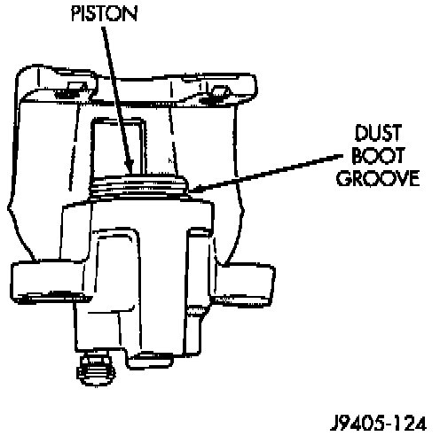
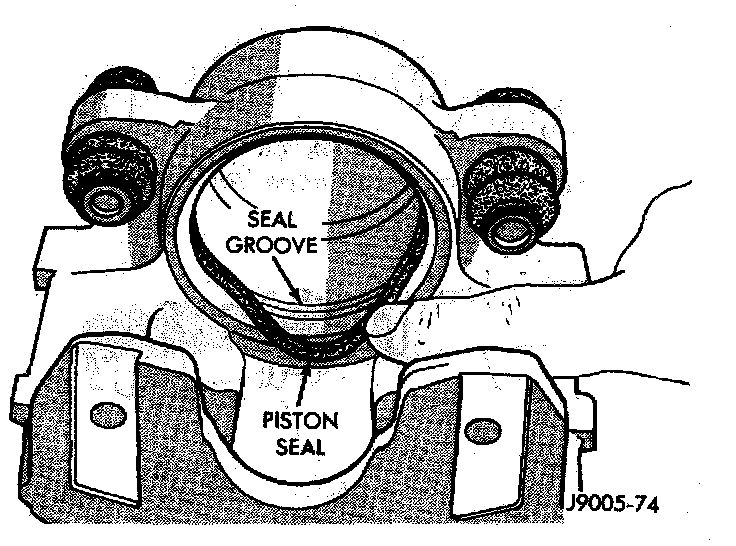
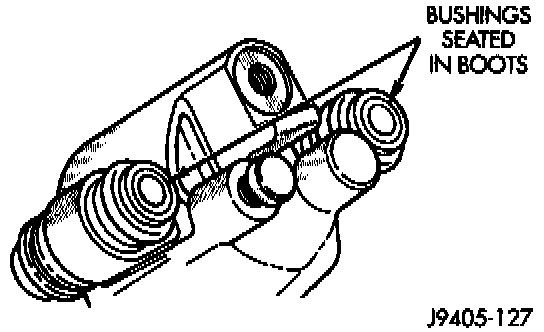

Assembly
1. Lubricate caliper piston bore and new piston seal with clean brake fluid.2. Install new piston seal in groove machined in piston bore. Be sure seal is fully seated and is not twisted. Press seal into place with fingertips.
3. Lubricate caliper piston with clean brake fluid and start piston into bore and seal by hand. Use a twisting, rocking motion to start piston into seal. Keep piston level while starting it in seal otherwise seal can be folded over.

4. Once piston is firmly started in seal, press piston about 2/3 of way into bore with C-clamp or bench vise.
CAUTION: Position a protective wood block between the piston and C-clamp or vise jaws. The wood block will avoid chipping or cracking the piston while pressing it into place.
5. Install dust boot on piston. Be sure boot lip is fully seated in groove at top of caliper piston.
Seal Installation:

6. Seat dust boot in caliper either by hand, or with a suitable size installer tool.
7. Press caliper to bottom of bore after seating dust boot. Be sure to use wood block to protect piston and boot.
8. Install caliper bleed screw, if removed.
9. Install bushing and boot assemblies in caliper. Be sure boots are centered in caliper as shown.
10. Apply silicone grease to interior of bushing boots. Then apply same lubricant to exterior and interior of bushings.

11. Install mounting bolt bushings in boots. Be sure boot lips are seated in grooves at ends of bushings.
12. Center bushing boots in caliper.
13. Install brake shoes in caliper.
14. Install caliper.